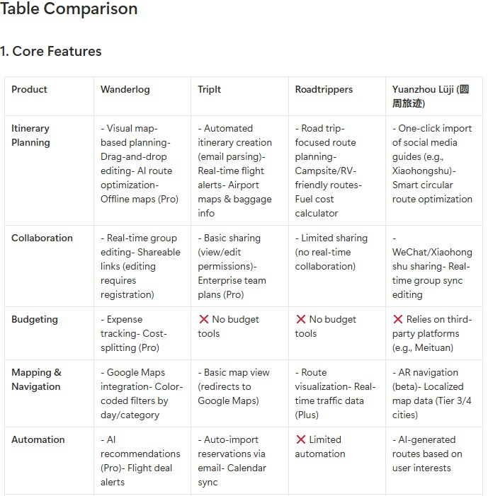
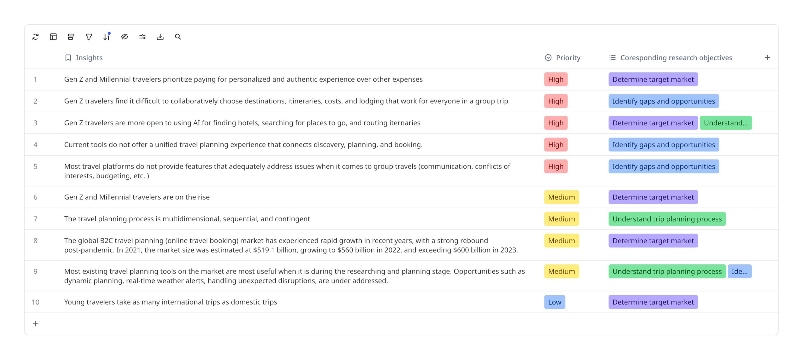
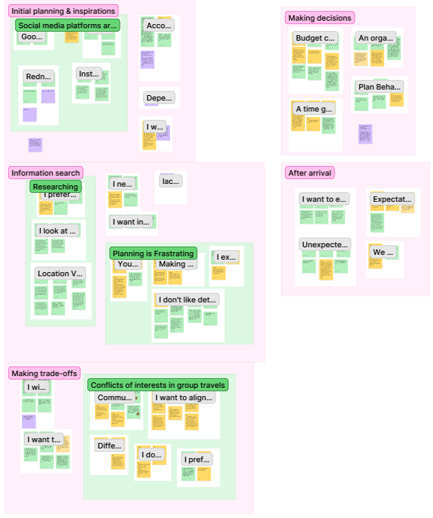
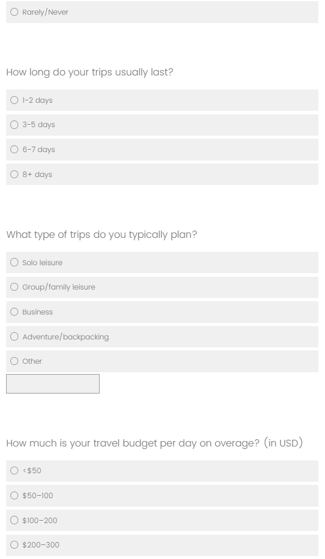
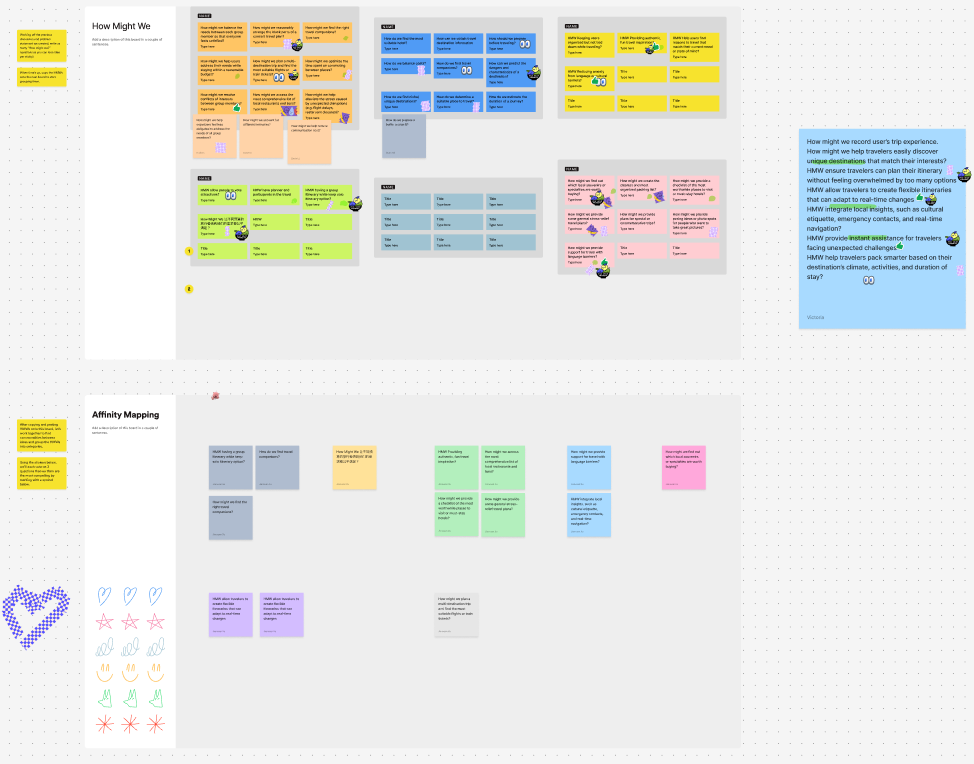
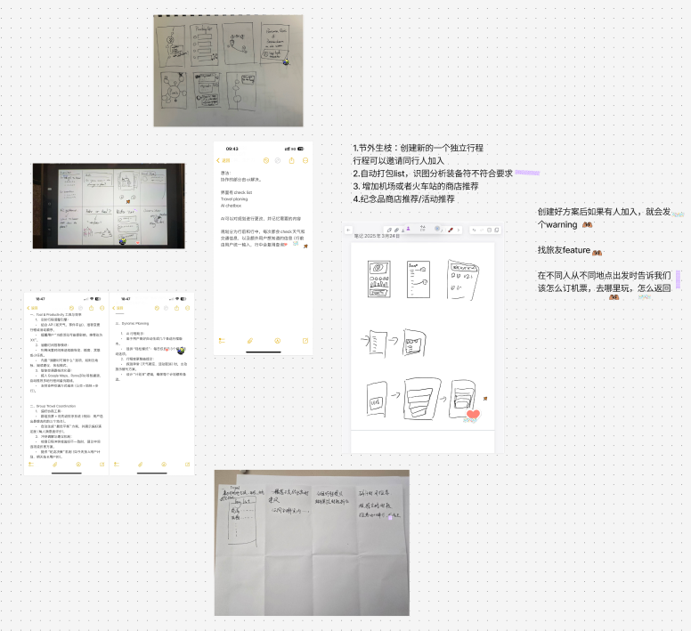

Tripal was a travel-planning app built by a small startup team. They had a working prototype and a founder's personal conviction. What they did not have was a validated understanding of who the product was for, what moments it addressed, or why someone would adopt it over existing tools. A business competition jury had already exposed those gaps publicly.
Over two months, I designed and led the research program that built the product understanding the team was missing. The research shaped the feature set, informed the pitch, and the team placed second at the competition and secured early investor funding.
02 · The Research Challenge
A prototype built on a single person's frustration.
The team's idea came from a real experience. Planning a winter trip to Iceland with five friends across six countries had turned into a logistical nightmare of conflicting dates, buried recommendations, and budget disputes. The frustration was the spark, and the prototype was the first response.
When the team took the idea to a business startup competition, the judges' feedback was pointed.
Competition feedback · Before research
What the judges said about the pitch.
I question the choice to start with Chinese students. This is a relatively small demographic that probably has less expendable income and travels less frequently than other demographics.
Judge A · on target market
Viral growth is the most important thing for this kind of app. It's a service where you invite the people you're travelling with. This needs to be addressed.
Judge B · on growth strategy
You need to tell a better, more refined story around target market, monetization, and differentiation.
Judge C · on positioning
Love the idea. Needs more user testing. Curious why students are your first market group when recent grads and young professionals generally have more disposable income?
Judge D · on research depth
Four judges, four concrete gaps.
The feedback made one thing clear: the team had built on unvalidated assumptions. They needed foundational research before they could pitch again. That is where I came in.
The product needed answers to three questions before anything else:
01Who is this product actually for?
02What specific problems should it solve?
03What should we build first, given a two-month deadline before the next pitch?
03 · Research Strategy
Four phases, from divergence to convergence.
I designed the research as a deliberate sequence. Desktop research mapped the landscape and identified the target user. Interviews surfaced the pain points that desktop research could not reveal. An exploratory survey tested whether those patterns held across a broader population and identified which traveler segment experienced the strongest friction. Two design sprint workshops converted insights into a feature set the team could build and pitch.
Desktop Research
Week 1
Interviews
Weeks 2–4
Survey
Weeks 5–6
Design Sprint
Weeks 7–8
Phase 01 · Week 1
Desktop Research
Industry reports · competitive analysis · social listening
Goals
Determine who the target user is
Map gaps and opportunities in the competitive landscape
Understand the end-to-end trip planning process
What I did
Reviewed industry reports on travel trends from the past three years (Euromonitor, McKinsey)
Monitored social conversations on r/travelertips
Reviewed research articles on trip planning behaviors and decision-making
Ran competitive analysis across existing travel planning tools


Phase 02 · Weeks 2–4
In-depth Interviews (12 participants)
Semi-structured · ages 25–33 · solo & group · domestic & international
Goals
Surface the specific moments, emotions, and trade-offs that produce real friction in trip planning
Understand how people handle unexpected disruptions during trips
Recruited for diversity in travel style (solo and group, domestic and international) and trip frequency

Phase 03 · Weeks 5–6
Survey (n=330)
Exploratory · no predefined sample criteria · cluster analysis
Goals
Test whether qualitative patterns hold across a broader population
Identify which traveler segments experience the strongest friction
What I did
Deployed a 330-response survey with no predefined sample criteria
Covered trip planning frequency, group coordination dynamics, budgeting approaches, and attitudes toward AI
Ran cluster analysis on five variables: age, travel budget, travel frequency, AI adoption rate, willingness to use AI

Phase 04 · Weeks 7–8
Design Sprint
Two 3-hour workshops · full team (PM, engineers, designer) · I facilitated
Goals
Quickly align expectations and product vision across teams
Converge on a buildable feature set before the investor pitch
What I did
Designed and facilitated two 3-hour workshops with the full team (PM, engineers, designer)
Day one: research immersion and divergent ideation. Day two: critique and feature selection.


04 · Findings
Three questions answered. Three pain points validated.
The research answered each of the product's three open questions. The landscape research identified who the product should serve and where existing tools fall short. The interviews and survey revealed what specific problems the product should solve. The design sprint determined what to build first. Here is what each phase produced.
Who this product is for, and where the gaps are
Gen Z leisure travelers are the rising market segment.
They take nearly 5 trips/year, devote 29% of income to travel, and 53% prefer AI-assisted planning tools. This validated our target user and answered the judges' primary concern.
Current tools don't connect discovery, planning, and booking.
Competitive analysis showed a fragmented landscape where no single tool handles the end-to-end journey. Opportunities in dynamic planning and real-time disruption handling are underaddressed.
Travel decision-making is multidimensional, sequential, and contingent.
Academic literature established this three-factor model, which became the backbone of our interview protocol.
What users told us
The landscape research identified where to look. The interviews and survey revealed what we found when we looked there.
01
Travel planning is a complicated process that often leads to choice paralysis and decision fatigue.
Travel planning forces people to navigate dozens of interdependent decisions across multiple platforms. Destination, dates, flights, accommodations, activities, coordination with others, budget. Each decision depends on others, and the constant switching between tools and tabs compounds into decision fatigue.
Evidence
I check flights, then I go check hotel prices, then I have to remember that number. Then I switch to figure out where I want to go each day. Later, when booking a train, I realize I need to check my hotel's checkout time again, then come back and adjust the ticket. It's a constant back-and-forth.P07 · interview
Planning just takes a lot of time, and you have this fear of missing out. You want to visit all the places, but at the end you're missing out because you spend too much time focusing on the plan.P03 · interview
Even with thorough planning, unexpected disruptions can ruin expectations and lead to frustration.
Even when people planned thoroughly (booking early, reading blogs, coordinating routes) they still encountered weather changes, delayed flights, restaurant closures, or sudden illness. Travelers wanted backup plans suggested before they needed them, not after the situation had already collapsed.
Evidence
Our flight was delayed and we had to rebook the hotel. Then someone got sick, so the whole day had to change. I just slept in the car while my friend drove.P09 · interview
It'd be great to have backup plans suggested ahead of time when something goes wrong. I wish there was a system that could warn me about local risks before I ran into them.P12 · interview
Within our survey's high-value cluster (young, frequent, AI-open travelers), "handling unexpected situations" was the statistically significant friction point (p<0.01).
Group travelers often face difficulties in planning due to diverse preferences and the logistical complexity of aligning multiple schedules.
Traveling with friends or family is what most people prefer. Coordinating such trips often produces tension: diverging preferences, poor communication, and unequal planning labor. People described the emotional cost of being the planner, the social risk of feeling too controlling, the frustration of unresponsive group chats, and the quiet resentment of carrying the load alone.
Evidence
My family usually has one person who ends up doing all the real planning. Others might help a bit, but not really. When I make plans, I always worry they'll think I'm being too controlling.P05 · interview
If you think about it, [a four-person trip] is exponential compared to a three-person one because you have to coordinate, right? Make sure everybody is cool with the plan.”P11 · interview
66%
of the interviewees said that they limit their travel companions to 2 or fewer to avoid the hustles.
Tagssocial-dynamicscoordination-laborcross-phase
05 · From Findings to Features
Four features, and a pitch that landed.
The design sprint converged the team on four core features. Each one maps directly to a research finding, and each represents a decision the team would not have made the same way without evidence under it.
◆ finding 01
Smart Link & Photo Recognition
Import travel inspiration from social media in one tap. The app detects restaurants, landmarks, and locations from shared links or screenshots, and saves them to the itinerary. Reduces the toggling between apps that was producing decision fatigue.
◆ Finding 01◆ Finding 03
Reservation Hub
All bookings in one place. Import flight, hotel, and rental car confirmations, and the app structures them automatically. No more toggling between email threads and booking platforms to remember what was arranged.
◆ Finding 01◆ Finding 02
Multi-day Itinerary & Smart Travel Tips
Flexible, well-paced multi-day itineraries with personalized checklist generated from the itinerary. Activity-level planning with transit times built in. Reduces redundant backtracking and improves schedule efficiency.
◆ Finding 02
Adaptive Suggestions
Detects disruptions like weather, closures, or transit delays, and proactively suggests alternatives before the plan collapses. Directly addresses the most-cited pain point in the survey data, and reframes the app as a trip safety net.
Pre-pitch usability validation
Pre-pitch usability validation.
After the team converged on features, I ran a round of usability testing with four participants simulating a two-day Paris trip. The test surfaced concrete iterations: labels like "Travel Insights" and "Batch import" were renamed, the AI "magic button" iconography was clarified, attraction cards were enlarged for mobile, and the weather alert was redesigned to be more proportionate. These are the kind of pre-pitch corrections that make the difference between a demo that lands and a demo that confuses.
Pitch outcome
The research held its weight in front of investors.
The investor pitch incorporated the research framing directly. Target market was grounded in quantitative data. Differentiation was tied to specific user moments that existing tools did not handle. The team had evidence-backed answers to the questions that had tripped them up two months earlier.
2nd place
At the business startup competition, after a research-led pitch that answered every question the jury had raised.
Early funding
Secured from investors after the pitch. The research was not the only thing that mattered, but it was the foundation.
06 · Reflection
Lessons I carry forward.
On timeline discipline
The research took most of the project window, and the design sprint took most of what was left, which meant we had almost no room for iteration after the feature set was chosen. If I ran this again, I would compress the early desktop and interview phases to buy back a week of iteration time at the end. The value of iteration in a startup context compounds with every day you cannot revise.
On how research gets absorbed by a team
In the design sprint, I presented the affinity maps of the interview data to the team members, in hopes that raw data helps with divergent thinking. Instead, what happened is that participants could not fully digest the volume of data, and it led to more personal bias being introduced during discussion. If I ran this again, I would try a different artifact: personas, user journey maps, or building a smaller set of synthetic user personas grounded in the interview material that team members could interrogate during ideation. Research artifacts are interfaces between researchers and the people who act on the findings, and that interface has its own usability to design for.
Previous case study
Turning a failing launch into a usable product.
How two rounds of longitudinal field research diagnosed why a privacy-first security camera failed at launch, then validated the fix. The star project, and the one where I learned what research operations actually means.